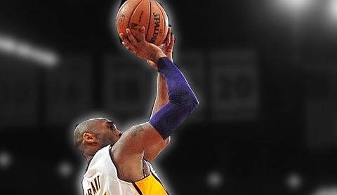
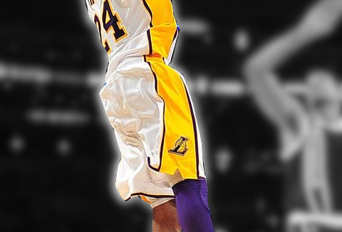
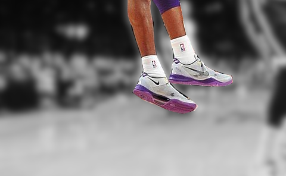

THE FADEAWAY
A closer look at how the Mamba himself uses his signature fadeaway
The Anatomy of the Fadeaway

The forearm was slightly bent towards his shooting eye. The release was dominated by his index finger to avoid shooting sideways. Years of toil meant the middle knuckle on that critical finger was later debilitated by arthritis.

The elbow, shoulder and hip would all be in line with the basket, ensuring the ball flies straight towards the basket. If he was in a tight position with his shooting side away from the basket, he would whip his leg around to force his hips and shoulder to rotate.
